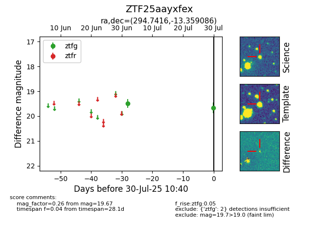

Target ZTF25aayxfex at 2025-07-30 10:40, see:
FINK: fink-portal.org/ZTF25aayxfex
Lasair: lasair-ztf.lsst.ac.uk/objects/ZTF25aayxfex
ALeRCE: alerce.online/object/ZTF25aayxfex
alt names
ZTF25aayxfex (ztf,fink)
coordinates:
equatorial (ra, dec) = (294.7416,-13.35909)
galactic (l, b) = (26.0869,-16.47787)
photometry
last ztfg=19.67
2 ztfg detections
